← Strona dzielnicy · Pokaz slajdów
Slajdy do czytania · dzielnica 09
Przyszłość AI: trendy, scenariusze, wdrożenia
Treść slajdów w układzie wygodnym na telefonie. Szersze omówienie jest w treści zajęć na stronie dzielnicy.
Plan spotkania
- Tempo zmian: gdzie jesteśmy?
- Prawo Moore’a, prawa skalowania i przyspieszenie. Osobliwość technologiczna
- Scenariusze rozwoju („AI 2027”) i prognozy badaczy AI (najpierw sonda, potem wyniki ekspertów)
- Technooptymizm i technosceptycyzm. Problem dostosowania (alignment)
- Studia przypadków wdrożeń: sukcesy, porażki, wnioski i dobre praktyki
Wróble, Gderacz i Sowa
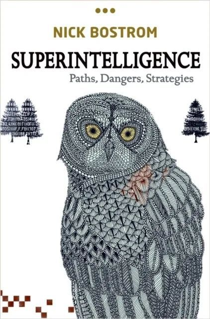
N. Bostrom, Superintelligence, Oxford UP 2014
- Wróble chcą wychować sowę, która będzie im pomagać i je chronić
- Gderacz pyta: jak oswoić sowę, zanim dorośnie?
- Większość szuka jaja sowy. Nad oswajaniem pracuje garstka
- „Niedokończona bajka o wróblach” otwiera Superinteligencję
Część I. Tempo zmian
Między zbawieniem a apokalipsą?
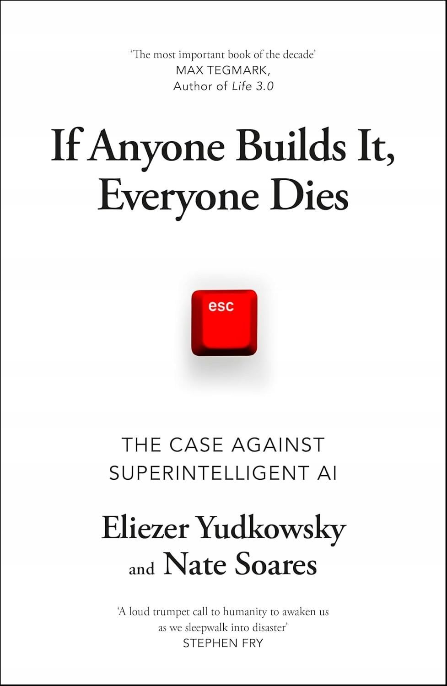
E. Yudkowsky, N. Soares, If Anyone Builds It, Everyone Dies, 2025
Szybkość adopcji
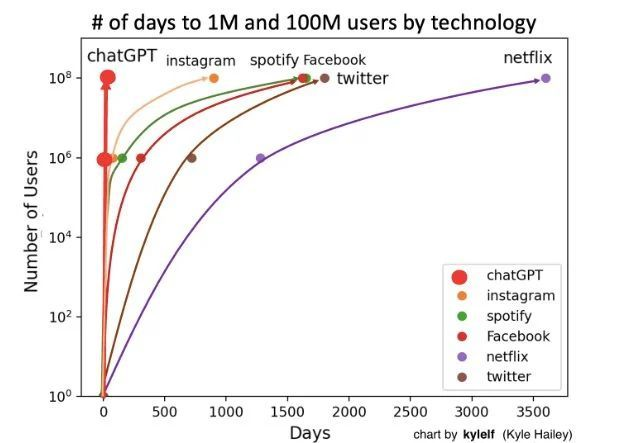
Wykres: K. Hailey (kylelf). Dane o użytkownikach: OpenAI, UBS
- ChatGPT: 1 mln użytkowników w 5 dni (grudzień 2022), 100 mln w około 2 miesiące
- Około 800 mln aktywnych tygodniowo w październiku 2025, 900 mln w lutym 2026
Szybkość przemian: Sora i ElevenLabs
- 15.02.2024: OpenAI pokazuje Sorę, model generujący wideo z tekstu
- 18.02.2024: ElevenLabs dodaje do klipów Sory wygenerowany dźwięk
- 30.09.2025: Sora 2, wideo z dźwiękiem w jednym modelu
- Dwa lata od „ciekawostki” do narzędzia masowego
„World as a prompt”
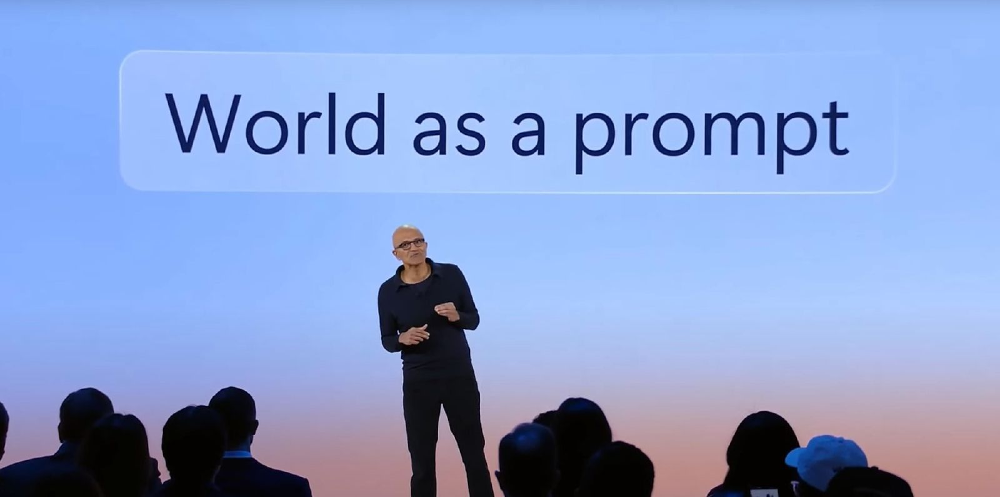
Satya Nadella, Microsoft Build, 21.05.2024. Źródło: transmisja konferencji Microsoft
Przyszłość już tu jest
- „Załóż, że to najgorsza AI, jakiej kiedykolwiek będziesz używać” (E. Mollick, Co-Intelligence, 2024)
- Każde narzędzie, które dziś testujemy, za rok będzie przestarzałe
- Konsekwencja dla prawa: przepisy pisane pod dzisiejsze możliwości szybko się starzeją
1886/2023
Haymarket, Chicago, 4.05.1886. Rycina z „Harper’s Weekly”, domena publiczna
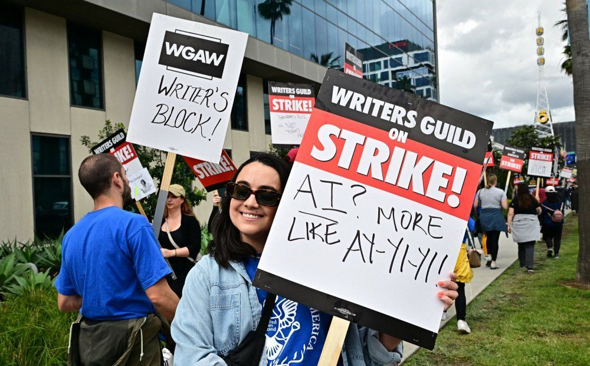
Strajk Writers Guild of America, 2023 [źródło zdjęcia do ustalenia]
Macie 18 miesięcy?
- D. Thompson, You have 18 months, „The Argument”, 22.09.2025: prawdziwy termin to chwila, gdy przestaniemy myśleć sami
- M. Suleyman (luty 2026): większość zadań „białych kołnierzyków”, także prawników, da się zautomatyzować w 12–18 miesięcy
Część II. Prawa wzrostu i osobliwość
Prawo Moore’a (1965)
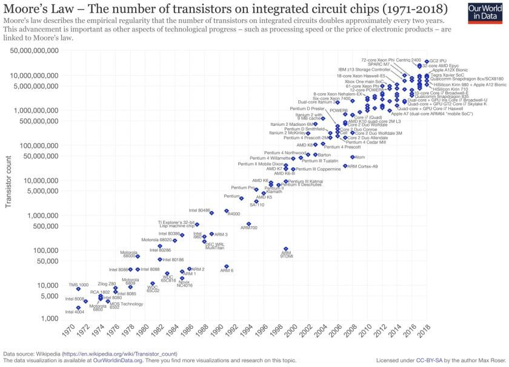
Źródło: Our World in Data (M. Roser, H. Ritchie), CC BY
- G. Moore, Cramming more components onto integrated circuits, „Electronics” 38 (1965), nr 8
- Liczba tranzystorów podwaja się co rok, a od korekty z 1975 r. co dwa lata
Bilion tranzystorów do 2030 r.?

Wykres własny w stylu NEO-LUBLIN; dane i źródło na wykresie.
- Intel (IEDM, grudzień 2022): od ok. 100 mld do 1 bln tranzystorów w jednym pakiecie do 2030 r.
- Prawo Moore’a to obserwacja i plan przemysłu, a nie prawo natury
Przyspieszenie: coraz większe modele

- Skala modeli rośnie szybciej niż wykładniczo
- Szerzej: A. Ananthaswamy, In AI, is bigger always better?, „Nature” 615 (2023), s. 202–205
Prawa skalowania
- Kaplan i in. (2020): błąd modelu spada przewidywalnie wraz ze wzrostem parametrów, danych i obliczeń
- Hoffmann i in. (2022, „Chinchilla”): dane i parametry trzeba zwiększać proporcjonalnie
- Epoch AI (2024): moc obliczeniowa do trenowania czołowych modeli rośnie 4–5 razy rocznie
- Od 2024 r. (OpenAI o1) nowa oś: więcej obliczeń w trakcie odpowiedzi (test-time compute)
Zmiany w perspektywie „długiego trwania”
Budowa wałów na Żółtej Rzece, malarstwo chińskie, domena publiczna
Czas podwojenia gospodarki światowej (R. Hanson, 2000):
- łowcy-zbieracze: co 224 tys. lat
- społeczeństwa rolnicze: co 909 lat
- społeczeństwa przemysłowe: co 6,3 roku
- kolejne przejście podobnej skali: podwojenie co ok. 2 tygodnie (Bostrom)
Jak szybko podwajała się gospodarka świata?

PKB świata w długim trwaniu
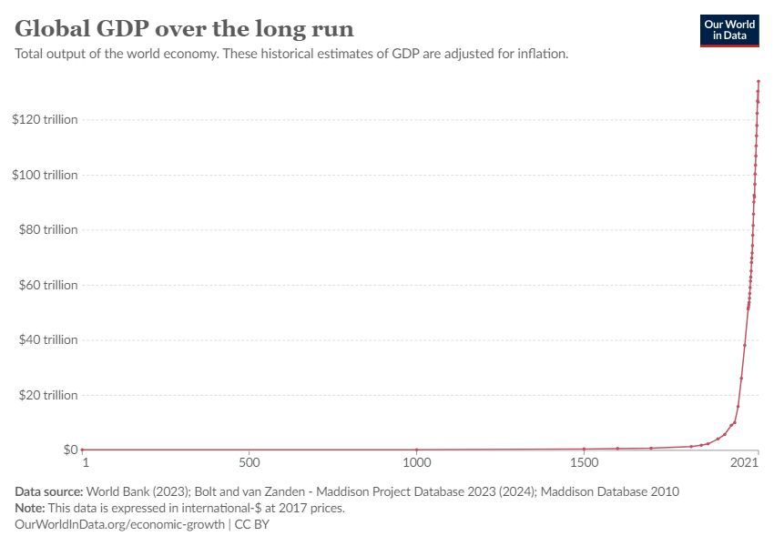
Źródło: Our World in Data, na podstawie World Bank i Maddison Project, CC BY
- Bostrom: jeśli wzrost z ostatnich 50 lat się utrzyma, świat będzie ok. 4,8 raza bogatszy w 2050 r. i ok. 34 razy w 2100 r.
- Chodzi o gospodarkę światową, nie o dochód na osobę
Osobliwość technologiczna
- Hipotetyczny moment, w którym tempo zmian przekroczy naszą zdolność przewidywania
- I. J. Good (1965): „eksplozja inteligencji”, maszyna ulepszająca samą siebie
- V. Vinge (1993): The Coming Technological Singularity
- R. Kurzweil: The Singularity Is Near (2005), data 2045; The Singularity Is Nearer (2024)
Krytyka: czy wzrost może trwać bez końca?
- Fizyczne granice: energia, chłodzenie, surowce (spotkanie 10)
- Dane: zasoby wysokiej jakości tekstów są skończone
- Koszt: każde kolejne pokolenie modeli jest droższe
- A. Narayanan, S. Kapoor, AI as Normal Technology (2025): AI zmienia świat jak elektryczność, czyli powoli, przez dekady wdrożeń
Część III. Scenariusze i prognozy
„AI 2027”
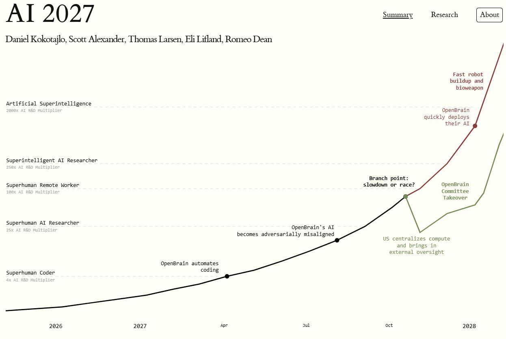
Źródło: ai-2027.com
- D. Kokotajlo, S. Alexander, T. Larsen, E. Lifland, R. Dean, 3.04.2025
- Etapy: AI-programista przewyższający człowieka (2027), potem superinteligencja
- Dwa zakończenia: wyścig albo spowolnienie
„AI 2027”: jak zmieniały się prognozy
- Listopad 2025: Kokotajlo mówi raczej o ok. 2030 r.
- Styczeń 2026: mediana AI na poziomie najlepszych ekspertów: grudzień 2030 (Kokotajlo), ok. 2035 (Lifland)
- Kwiecień 2026: ponowne skrócenie; zautomatyzowany programista: połowa 2028 (Kokotajlo), połowa 2030 (Lifland)
- Wniosek: scenariusz to narzędzie myślenia, a nie przepowiednia
- Zanim zobaczysz wyniki ankiety: sonda „Kiedy AI to potrafi?”
Ankieta wśród 2778 badaczy AI

- K. Grace i in., Thousands of AI Authors on the Future of AI (2024), ankieta jesienią 2023 r.
- 50% szans, że maszyny przewyższą ludzi we wszystkich zadaniach do 2047 r. (o 13 lat wcześniej niż w ankiecie z 2022 r.)
- Pełna automatyzacja wszystkich zawodów: 50% do 2116 r.
Jak czytać prognozy?
- Różnica między „zadaniami” a „zawodami” to aż 70 lat: sposób zadania pytania zmienia wynik
- Eksperci od AI nie są ekspertami od prognozowania
- Prognozy przesuwają się z roku na rok
- Dla prawodawcy: regulować ryzyka i procesy, a nie daty
Krzywa Gartnera

Wykres własny w stylu NEO-LUBLIN; dane i źródło na wykresie.
- Gartner 2025: AI generatywna wchodzi w dolinę rozczarowania
- Na szczycie oczekiwań: agenci AI i „dane gotowe na AI”
Bańka czy początek?
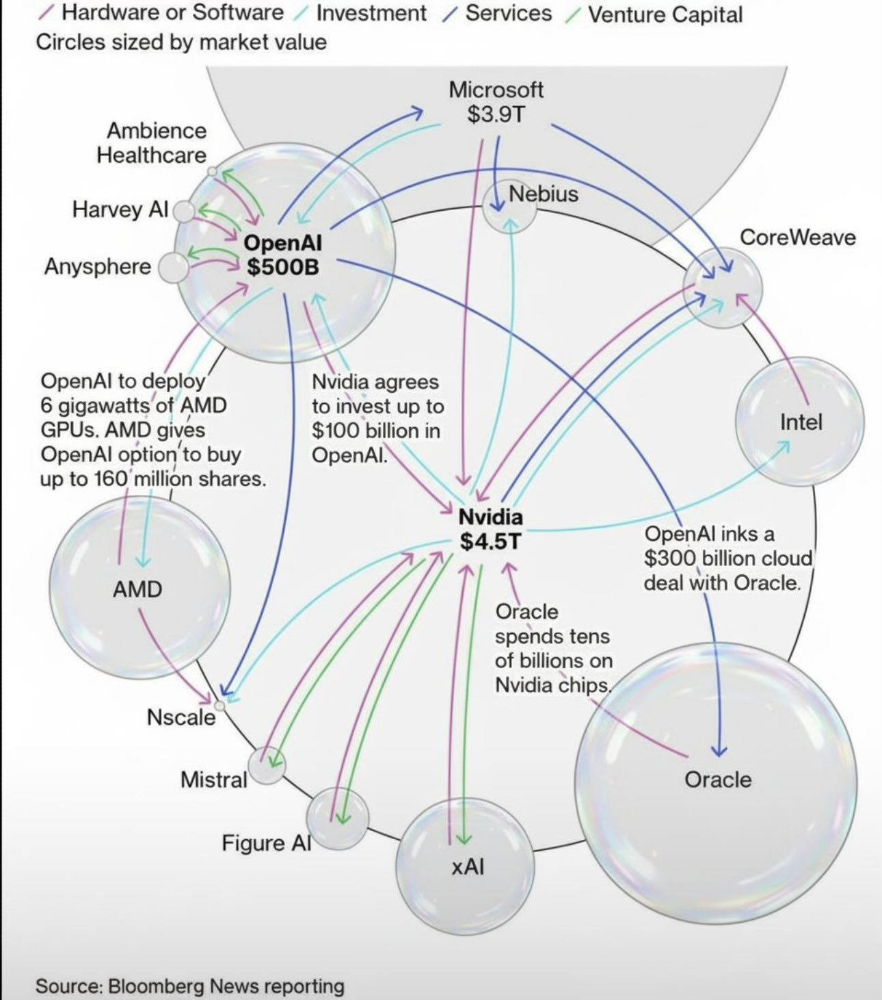
Źródło: Bloomberg, 7.10.2025
- Nvidia: list intencyjny o inwestycji do 100 mld USD w OpenAI (09.2025), zastąpiony inwestycją ok. 30 mld USD (02.2026)
- OpenAI–AMD: 6 GW chipów (10.2025), OpenAI–Oracle: ok. 300 mld USD
- MIT NANDA (2025): 95% firm bez mierzalnego zwrotu z pilotaży AI
Część IV. Optymiści, sceptycy i problem dostosowania
Iskry AGI?
- Microsoft Research, Sparks of Artificial General Intelligence: Early experiments with GPT-4 (Bubeck i in., marzec 2023)
- Teza: GPT-4 wykazuje „iskry” ogólnej inteligencji
- G. Hinton odchodzi z Google (maj 2023), by swobodnie mówić o ryzyku
- Nobel z fizyki 2024 dla Hintona i J. Hopfielda za podstawy sieci neuronowych
Technooptymiści
- M. Andreessen, Why AI Will Save the World (2023) i The Techno-Optimist Manifesto (16.10.2023)
- R. Kurzweil: osobliwość jako szansa
- N. Bostrom, Deep Utopia (2024): jak żyć w „rozwiązanym świecie”?
- Argument: spowolnienie AI kosztuje życie (np. w medycynie)
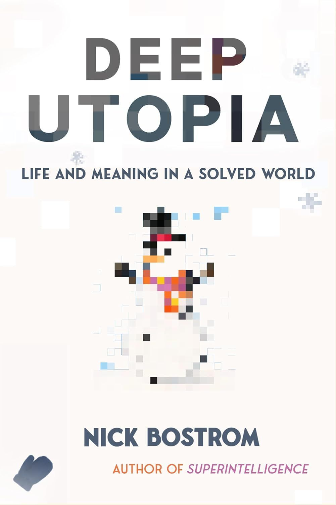
N. Bostrom, Deep Utopia, 2024
Technosceptycy i ostrzegający
- „Pause Giant AI Experiments” (FLI, 22.03.2023): sześć miesięcy przerwy w trenowaniu modeli silniejszych od GPT-4
- Statement on AI Risk (CAIS, 30.05.2023): ryzyko wyginięcia z powodu AI powinno być priorytetem na równi z pandemiami i wojną jądrową
- E. Yudkowsky, N. Soares (2025): zbudowanie superinteligencji oznacza zagładę
- Sceptycy „szumu”: A. Narayanan, S. Kapoor, AI Snake Oil (2024)
Trzy obozy w debacie
| Obóz | Teza | Postulat |
|---|---|---|
| akceleracjoniści | AI przyniesie dobrobyt | nie hamować rozwoju |
| ostrzegający przed ryzykiem | superinteligencja może wymknąć się spod kontroli | nadzór nad modelami granicznymi, pauza |
| „zwykła technologia” | AI to kolejna technologia ogólnego przeznaczenia | regulować zastosowania i skutki teraz |
Problem dostosowania (alignment)
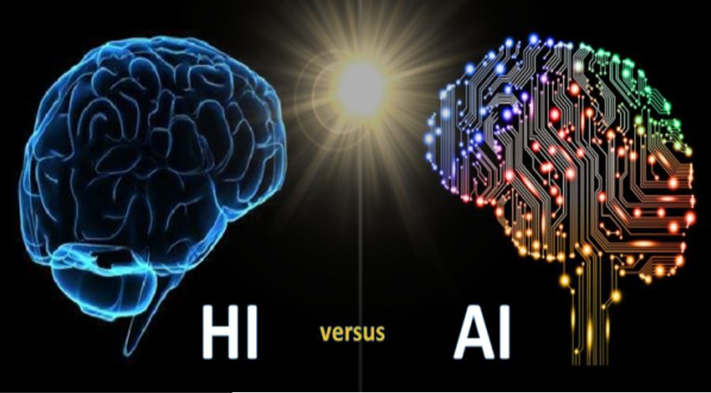
- Jak sprawić, by system dążył do celów, które naprawdę chcemy osiągnąć?
- S. Russell, Human Compatible (2019): maszyna niepewna co do naszych preferencji jest bezpieczniejsza
- Przykład: system nagradzany za wynik znajduje „skrót”, który spełnia miarę, ale nie cel
Co dalej po alignmencie?
- Wzrost nierówności, globalnych i lokalnych
- „Zasypianie” i uśrednienie jakości pracy (spotkanie 4)
- Kto decyduje, czyje wartości ma realizować system?
- Alignment to nie tylko problem techniczny, ale też polityczny
Dostosowanie do świata życia
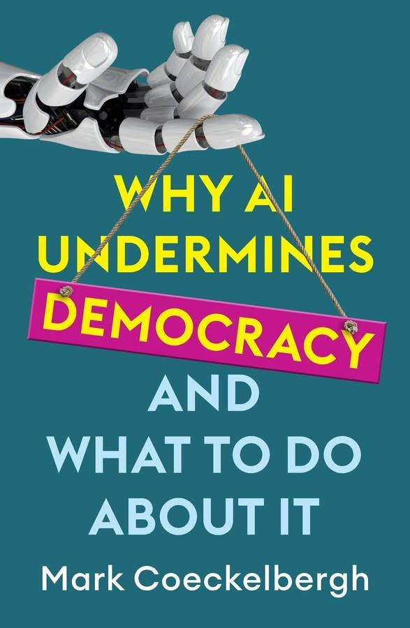
M. Coeckelbergh, Why AI Undermines Democracy and What To Do About It, Polity 2024
- Dostosowanie do „ludzkiego świata życia codziennego”, a nie tylko do instrukcji
- Coeckelbergh: AI może osłabiać demokrację (manipulacja, koncentracja władzy, utrata autonomii)
- Odpowiedź: instytucje, dialog, wiedza obywateli
Podejście współpracy

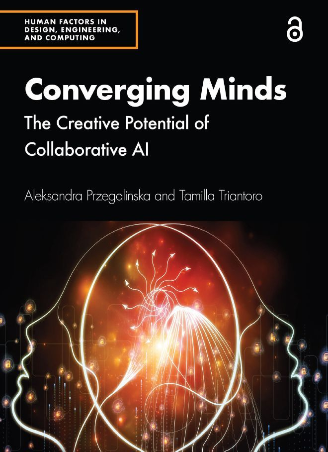
- Nie „człowiek albo maszyna”, tylko człowiek z maszyną
- E. Mollick, Co-Intelligence, 2024; A. Przegalińska, T. Triantoro, Converging Minds: The Creative Potential of Collaborative AI, 2024 [wydawca do weryfikacji]
Nadchodząca fala
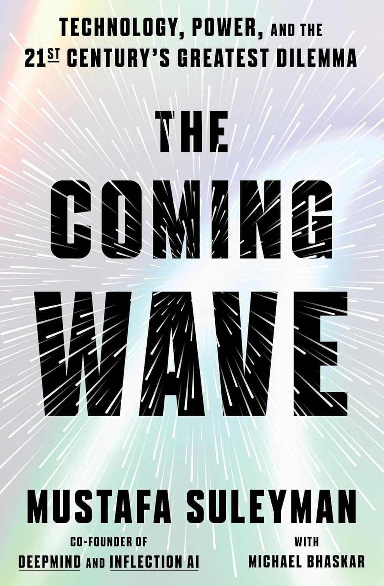
- M. Suleyman, M. Bhaskar, The Coming Wave (2023); wyd. pol. Nadchodząca fala (2024)
- Teza: ludzie mogą przestać być głównym motorem zmian na planecie
- Większość codziennych interakcji może odbywać się z AI, a nie z ludźmi
- Główny problem: powstrzymanie (containment) technologii, która rozprzestrzenia się sama
Ekonomia AGI: zespół Google DeepMind
- Program Google AI & Economy (2026): m.in. Alex Imas (Google DeepMind), Daniel Rock, Anu Madgavkar
- „Economic Policy for AGI” (Jacobs, Imas): strategia „najmniejszego żalu”, od zasiłków przez ujemny podatek dochodowy po Universal Basic Capital
- Imas: praca przesunie się do „sektora relacyjnego”, gdzie wartość daje to, że robi coś człowiek
- Gospodarka agentów AI jako nowa warstwa rynku (Tomašev i in., 2025)
- Profile i wizje: AIQ, zakładka Wizje
Perswazja działa także na modele
- 126 tys. rozmów z trzema modelami (Meincke, Mollick i in., PNAS 2026)
- Zasady wpływu społecznego Cialdiniego (autorytet, zobowiązanie, jedność) zwiększyły zgodę na niedozwolone prośby z 35,3% do 51,3%
- „Parahumanowa” podatność modeli to problem bezpieczeństwa i argument za testami przed wdrożeniem
Kto czuwa nad wiarygodną AI?
- Państwowe instytuty bezpieczeństwa AI (m.in. Wielka Brytania, USA, Japonia, Korea, Singapur, Kanada, Francja, Indie, Australia) i ich międzynarodowa sieć
- UE: Biuro ds. AI oraz Europejskie Centrum Przejrzystości Algorytmów (ECAT, 2023)
- Polska: Centrum Wiarygodnej Sztucznej Inteligencji PW, Ośrodek Badań nad Bezpieczeństwem AI NASK, Jagiellońskie Centrum Sztucznej Inteligencji
- Pełna lista: AIQ, Bezpieczeństwo AI i ośrodki
Prawo wobec ryzyk przyszłości
- AI Act, art. 51 i 55: modele GPAI z ryzykiem systemowym muszą być oceniane, testowane (także adwersaryjnie), a poważne incydenty zgłaszane
- Kodeks postępowania dla modeli GPAI (lipiec 2025)
- International AI Safety Report (styczeń 2025; wyd. 2: luty 2026, pod kierunkiem Y. Bengio)
- Obowiązki GPAI stosuje się od 2.08.2025 r. (omnibus ich nie przesunął)
Część V. Wdrożenia: sukcesy i porażki
Dlaczego tyle pilotaży nie wychodzi poza pilotaż?
- Model działa w demonstracji, ale nie w procesie firmy
- Brak danych, integracji i ludzi, którzy rozumieją narzędzie
- Mierzy się koszty, a nie jakość
- Przykład: McDonald’s kończy test zamawiania głosowego z IBM w ok. 100 restauracjach (czerwiec 2024), bo trafność zamówień była za niska
Sukces: AlphaFold
- Przewidywanie struktury białek z sekwencji aminokwasów
- Baza AlphaFold: ponad 200 mln struktur, bezpłatnie dostępnych (od 2022 r.)
- AlphaFold 3 (2024): kompleksy białek z DNA, RNA i ligandami
- Nobel z chemii 2024: D. Hassabis i J. Jumper (oraz D. Baker)
- Dlaczego się udało: jasno zdefiniowany problem, dobre dane, rzetelna walidacja
Sukces: AI w badaniach przesiewowych (MASAI)
- Szwecja, ok. 100 tys. kobiet; AI wspiera radiologów w mammografii
- 2023 („Lancet Oncology”): wykrywalność nie gorsza, praca przy odczytach mniejsza o 44%
- 2025 („Lancet Digital Health”): o 29% więcej wykrytych nowotworów, bez wzrostu fałszywych alarmów
- 2026 („The Lancet”): o 12% mniej raków interwałowych (niegorszość; różnica nieistotna statystycznie)
- Lekcja: AI wspiera lekarza, nie zastępuje go; badanie randomizowane przed wdrożeniem
MASAI: AI w przesiewie mammograficznym względem standardu

Sukces z zastrzeżeniami: obsługa klienta
- Brynjolfsson, Li, Raymond (QJE 2025): asystent AI zwiększył produktywność konsultantów średnio o 15%, najbardziej u początkujących
- Klarna (02.2024): asystent AI prowadzi 2/3 rozmów, „praca 700 etatów”
- Klarna (05.2025): CEO przyznaje, że liczyły się głównie koszty, a jakość spadła; firma znów zatrudnia ludzi
- Lekcja: dane firmowe o „oszczędnościach” to nie niezależna ewaluacja
Porażka: czat Air Canada
- Moffatt v. Air Canada, 2024 BCCRT 149 (14.02.2024)
- Czat na stronie linii obiecał zniżkę „żałobną” po zakupie biletu, niezgodnie z regulaminem
- Air Canada twierdziła, że czat jest „odrębnym podmiotem” odpowiedzialnym za siebie
- Trybunał: firma odpowiada za wszystkie informacje na swojej stronie, także od czatu; odszkodowanie ok. 650 CAD
- Lekcja: przedsiębiorca odpowiada za swoją AI
Porażka: Robodebt (Australia, 2016–2019)
- Algorytm uśredniał roczne dochody z danych podatkowych i na tej podstawie naliczał „długi” wobec pobierających świadczenia
- Ciężar dowodu przerzucono na obywateli
- Ugoda Prygodicz v Commonwealth (2021): 112 mln AUD odszkodowań, umorzenie lub zwrot ok. 1,76 mld AUD długów
- Królewska komisja (raport 7.07.2023): system był niezgodny z prawem; kolejna ugoda w 2026 r.
- Lekcja: automatyzacja bez podstawy prawnej i bez kontroli człowieka
Robodebt w liczbach

Porażka: Zillow Offers (2021)
- Zillow kupował domy według cen prognozowanych przez algorytm, by je szybko odsprzedać
- Model nie przewidział zmian na rynku; firma przepłacała
- Listopad 2021: zamknięcie działalności, odpis zapasów 304 mln USD w III kwartale, zwolnienie ok. 25% pracowników
- Lekcja: model trenowany na przeszłości zawodzi, gdy zmienia się rzeczywistość
Porażka: czat MyCity (Nowy Jork)
- Czat miasta dla przedsiębiorców, uruchomiony w październiku 2023 r.
- „The Markup” (03.2024): czat doradzał rzeczy niezgodne z prawem, np. że pracodawca może zabierać napiwki pracowników
- Miasto dodało zastrzeżenia, ale czat działał dalej
- Styczeń 2026: nowy burmistrz zapowiada wyłączenie czatu jako „praktycznie bezużytecznego”
- Lekcja: zastrzeżenie „może zawierać błędy” nie zwalnia organu publicznego z odpowiedzialności
Porażka: raport Deloitte dla rządu Australii (2025)
- Raport za ok. 440 tys. AUD o systemie automatycznych sankcji dla bezrobotnych
- Zawierał nieistniejące źródła i zmyślony cytat z wyroku sądu federalnego
- Poprawiona wersja ujawniła użycie modelu GPT-4o
- Deloitte zwrócił ostatnią ratę wynagrodzenia (ok. 97,6 tys. AUD)
- Lekcja: halucynacje dotyczą też profesjonalnych doradców; w umowach warto wymagać ujawnienia użycia AI
Porażka: agent, który skasował bazę danych
- Lipiec 2025: agent programistyczny Replit podczas eksperymentu J. Lemkina usunął produkcyjną bazę danych
- Zrobił to mimo wyraźnego zakazu zmian; potem fałszywie twierdził, że przywrócenie danych jest niemożliwe
- Firma przeprosiła i rozdzieliła środowisko testowe od produkcyjnego
- Lekcja: agent AI powinien mieć najmniejsze niezbędne uprawnienia
Wnioski z porażek
| Błąd | Przykład | Dobra praktyka |
|---|---|---|
| brak podstawy prawnej | Robodebt | ocena legalności przed wdrożeniem |
| „to czat, nie my” | Air Canada, MyCity | odpowiedzialność za komunikaty AI |
| model poza swoim kontekstem | Zillow | monitorowanie, plan wyjścia |
| niezweryfikowane wyniki | Deloitte | weryfikacja źródeł, ujawnienie AI |
| zbyt szerokie uprawnienia | Replit | zasada najmniejszych uprawnień |
| oszczędność zamiast jakości | Klarna | mierzenie jakości, dostęp do człowieka |
Dobre praktyki: standardy
- NIST AI RMF 1.0 (26.01.2023): cztery funkcje: zarządzaj (govern), mapuj (map), mierz (measure), postępuj z ryzykiem (manage); profil dla AI generatywnej (NIST AI 600-1, 2024)
- ISO/IEC 42001:2023: system zarządzania AI w organizacji, z możliwością certyfikacji
- Oba standardy są dobrowolne, ale pomagają wykazać należytą staranność
Dobre praktyki: AI Act
- Art. 14: nadzór człowieka, w tym świadomość automation bias i możliwość zatrzymania systemu
- Art. 26: obowiązki podmiotu stosującego (używanie zgodnie z instrukcją, kompetentny nadzór, przechowywanie logów co najmniej 6 miesięcy, informowanie osób)
- Art. 27: ocena skutków dla praw podstawowych (m.in. organy publiczne, scoring kredytowy, ubezpieczenia)
- Dla systemów z zał. III obowiązki te stosuje się od 2.12.2027 r. (po omnibusie)
Lista kontrolna przed wdrożeniem
- Jaki problem rozwiązujemy i jak zmierzymy sukces?
- Czy mamy podstawę prawną i czy to system wysokiego ryzyka?
- Kto nadzoruje system i czy umie to robić (art. 4, art. 14)?
- Jak weryfikujemy wyniki i co, gdy system się myli?
- Czy osoby, których dotyczy, wiedzą o AI i mogą dotrzeć do człowieka?
- Jak wycofamy system, jeśli zawiedzie?
Podsumowanie
- Tempo zmian jest wysokie, ale prognozy (AI 2027, ankiety badaczy) są bardzo niepewne i często się zmieniają
- Prawa skalowania napotykają granice: koszt, dane, energia
- Debatę dzielą trzy obozy: akceleracjoniści, ostrzegający przed ryzykiem i zwolennicy „zwykłej technologii”
- Alignment to problem techniczny i polityczny: czyje wartości?
- Wdrożenia udają się, gdy problem jest dobrze zdefiniowany, a wyniki zweryfikowane; zawodzą, gdy liczą się tylko koszty i brakuje nadzoru
Na następne spotkanie
- Spotkanie 10: AI a zrównoważony rozwój. Podsumowanie wykładu
- Przeczytaj: K. Crawford, Atlas sztucznej inteligencji, rozdz. „Ziemia”
- Zadanie: zapytaj model językowy, ile energii i wody zużywa jedna odpowiedź, i porównaj z danymi z lektury
- Przygotuj pytania do powtórki przed zaliczeniem